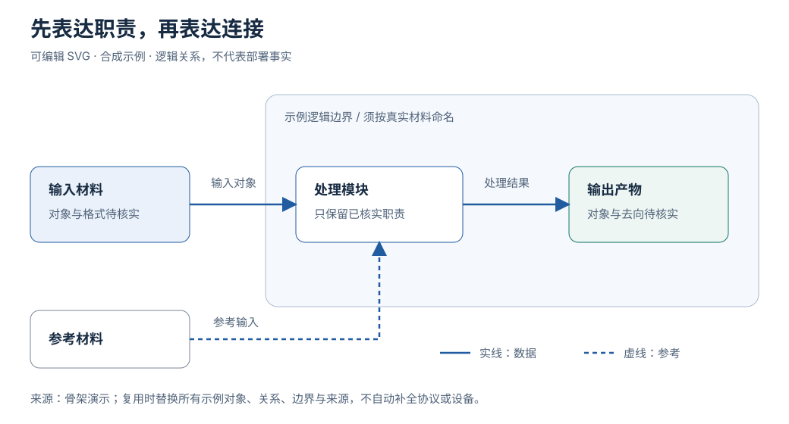
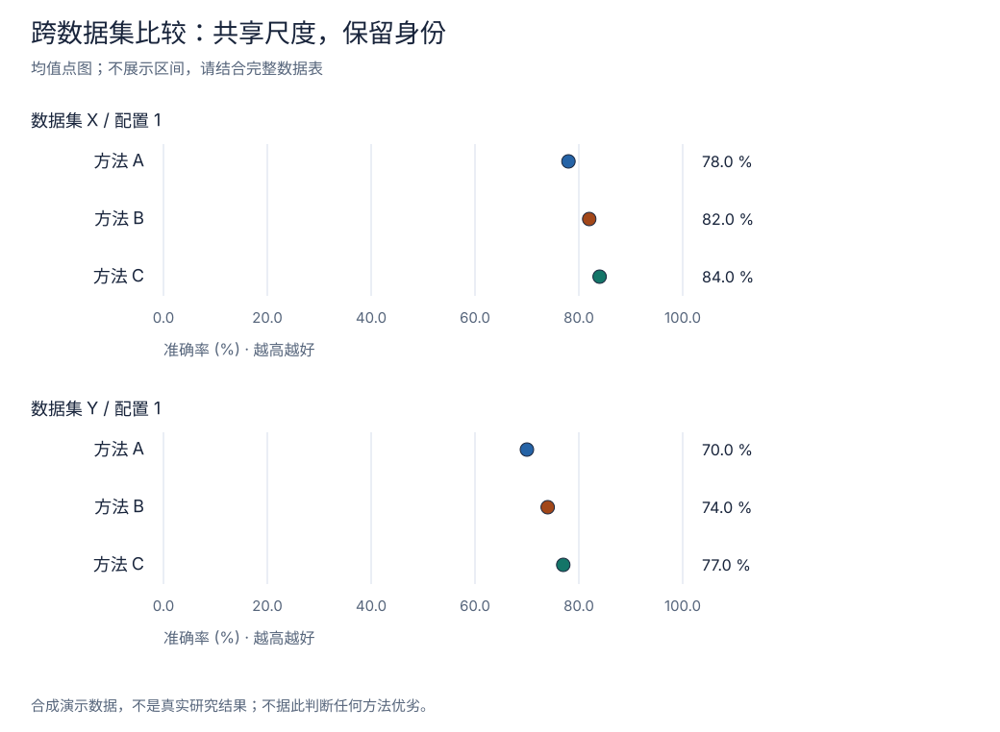

QUESTION → METHOD → EVIDENCE
让研究问题、方法与证据
在同一页上对得起来。
这是学术项目页的可编辑示例。宽栏承载核心机制，窄栏解释边界；实验与限制紧邻证据，而不是被装饰性文案取代。
模板演示，非真实论文。替换标题、作者、图、数值与引用后才能作为研究成果发布。
01 / METHOD
先读总体，再看关键细节
窄屏可在图内横向滚动。

核心图负责解释机制；文字补充图中不易表达的假设、限制与证据。
02 / EVIDENCE
指标放回比较条件里
下面是合成数据的示例图，不能作为论文结论。正式内容须注明数据集、配置、重复次数与误差含义。
窄屏横向滚动，避免把坐标和数值缩小。

03 / LIMITATIONS
把不能证明的部分也写清楚
这里列出真实研究的适用条件、数据覆盖、失败案例和未验证假设。没有显著性检验，就不写“显著优于”。